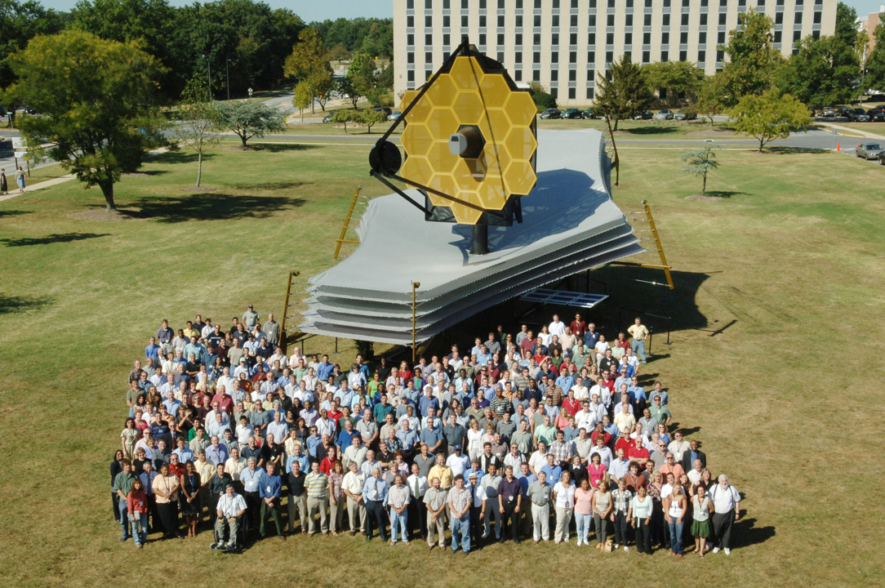

Le télescope spatial James Webb (JWST, pour l'anglais James Webb Space Telescope, ou parfois TSJW selon son nom français1,2) est un télescope spatial servant d'observatoire fonctionnant principalement dans l'infrarouge, développé par la NASA avec la participation de l'Agence spatiale européenne (ESA) et de l'Agence spatiale canadienne (ASC). Plus grand et plus onéreux télescope spatial à son lancement, le JWST est conçu pour poursuivre les travaux du télescope spatial Hubble, en effectuant toutefois ses observations dans des longueurs d'onde plus longues. Son lancement a lieu le 25 décembre 2021 au centre spatial de Kourou en Guyane française et la première image de qualité scientifique produite par le télescope est publiée en juillet 2022.
Les observations du JWST sont centrées sur l'infrarouge proche et moyen, tout en incluant une partie du spectre située dans le domaine du visible (longueurs d'onde allant de 0,6 à 28 μm). Par sa résolution, sa surface collectrice et la bande spectrale couverte, il surpasse largement Hubble pour l'observation dans l'infrarouge, mais, contrairement à celui-ci, il ne peut observer ni l'ultraviolet, ni l'intégralité de la lumière visible. Malgré la grande taille de son miroir primaire (6,5 m de diamètre contre 2,4 m pour Hubble), sa masse de 6 200 kg est presque deux fois plus faible que celle de son prédécesseur. Son pouvoir de résolution atteint 0,1 seconde d'arc et il peut collecter une image neuf fois plus rapidement que Hubble. Le JWST emporte quatre instruments : la caméra NIRCam fonctionnant dans le proche infrarouge, le spectro-imageur MIRI dans le moyen infrarouge, le spectrographe NIRSpec dans le proche infrarouge et le spectro-imageur NIRISS, également dans le proche infrarouge.
Les résolutions angulaire et spectrale de ses instruments, ses capacités inédites dans le moyen infrarouge et en spectroscopie (modes multi-objets et champ intégral) seront utilisées pour approfondir nos connaissances dans les principaux domaines de l'astronomie : période de réionisation et formation des premières étoiles et des galaxies après le Big Bang, formation et évolution des cortèges planétaires et composition de l'atmosphère des exoplanètes. Les données recueillies contribueront à expliquer la genèse et le rôle des trous noirs supermassifs au sein des galaxies, à préciser le processus de formation des planètes, à déterminer la proportion de planètes pouvant héberger la vie et à apporter des informations sur la mystérieuse énergie sombre.
Les travaux sur le JWST débutent en 1989, mais le projet connaît de nombreuses évolutions et vicissitudes dues aux défis technologiques qu'il soulève (miroir primaire pliable, bouclier thermique déployable) et aux dépassements budgétaires. Le projet frôle l'annulation en 2011. Pour la seule NASA, son coût de fabrication, qui a été estimé à trois milliards de dollars américains à l'issue de la phase de conception générale en 2005, atteint finalement environ dix milliards de dollars. La date de lancement, fixée initialement à 2013, est repoussée régulièrement jusqu'à fin 2021. En 2002, le projet prend le nom du second administrateur de la NASA, James E. Webb, qui a largement contribué au succès du programme Apollo.
Le télescope est lancé par une fusée Ariane 5 le 25 décembre 2021, depuis la base de Kourou en Guyane française, et placé, après un transit d'un mois, en orbite autour du point de Lagrange L2 du système Soleil-Terre, situé à 1,5 million de kilomètres de la Terre, du côté opposé au Soleil. À la suite d'une phase de mise en service de six mois, comprenant le déploiement particulièrement délicat de son bouclier thermique et de ses miroirs, débute la mission scientifique d'une durée de cinq ans, qui doit permettre de remplir les objectifs assignés au télescope JWST. Le temps d'observation est réparti, par une commission scientifique, entre les équipes ayant contribué au projet et les chercheurs du monde entier, par le biais d'une évaluation annuelle de l'apport de leurs propositions. Le JWST emporte des réserves d'ergols (nécessaires pour maintenir sa position au point de Lagrange) qui doivent lui permettre de rester en fonctionnement pendant au moins vingt ans.